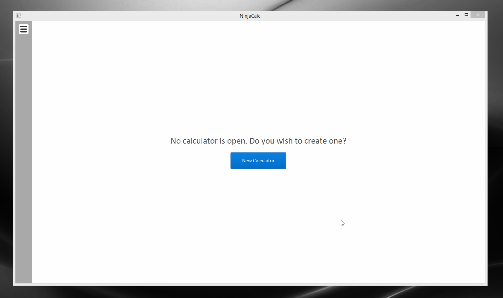
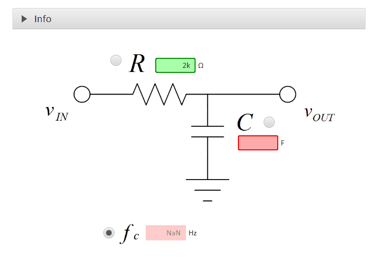

Features
A suite of useful embedded-engineering related calculators.
As-you-type Updating
No more pressing the "Calculate" button! All parts of the calculator update as you type.

Metric Prefix Support
Enter values in the same concise format engineers use, using metric prefixes (e.g. u, m, k, M, G, e.t.c). Makes widely-varying values really easy to enter and understand.
Metric/Imperial Unit Support
Dynamic unit-changing support (including various metric and imperial units where appropriate).

Continuous Sanity Checks
Continuously checking validators which make sure calculator variables are within range and sensible.

Helpful Tooltip Info
Helpful tooltip information for each calculator variable.
Smart Calculator Resizing
Smart calculator resizing to cater for various screen sizes and resolutions.
Expandable Info For Each Calculator
Want to know the exact equations each calculator is using? Interested in the theory behind each calculator? Expand each calculators "Info" section to get a detailed description of whats going on.

Powerful And Compact Calculator Code Model
Powerful and compact language for describing new calculators, making it easy to add your own if so wanted!
Contributors
Thanks to Phillip Abplanalp, Zac Frank, Jason Cleland and Brendon Le Comte for user-interaction guidance and tips!
Thanks to the additional testing done by William Hunter and Jared Eagle.
Thanks to alexcurtis for the time and effort he put into the react-treebeard module.
Thanks to the kids at Facebook for the great react framework (albeit no longer used!).
Thanks to Jesse Eedrah for guidance and help with Javascript and the React/Redux stack.
Thanks to Michael O'Donnell (a la Mod) for sharing some of his pro-knowledge of the C#/.NET language.
GIFs for this home page created with the amazing open-source "Screen To Gif" program.
The team at ej-technologies have graciously donated me an open-source licensed version of  , the multi-platform installer builder for Java applications.
, the multi-platform installer builder for Java applications.